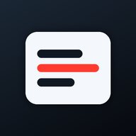

Teleprompter
Lee tu guion mirando a la cámara. El texto no se graba.
Se guarda solo en este dispositivo
Cómo funciona y consejos
El texto no se graba. La imagen de la cámara va en un <video> y el guion es una capa HTML encima. La grabación usa directamente el flujo de cámara + micrófono, así que el guion nunca entra en el vídeo.
- Toca la pantalla mientras lees para ocultar o mostrar los controles.
- Desliza el texto con el dedo para colocarlo donde quieras.
- Pulsa Grabar: verás una cuenta atrás de 3 segundos y el texto empieza a moverse.
- Puedes ensayar sin grabar con el botón de reproducir.
La cámara necesita HTTPS (en GitHub Pages ya está activo). En iPhone, instala la app desde Safari con Compartir → «Añadir a pantalla de inicio».
Activando cámara…
Acepta el permiso de cámara y micrófono.
00:00
Grabando
3
La grabación empieza en…
Tu grabación
Solo se grabó la cámara y el micrófono. El texto del teleprompter no aparece en el vídeo.